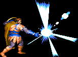

|
|
|
CLERIC |
 |
| |
여기서의 데미지는 상대적인 데미지를 뜻합니다.
이곳에 적은 콤보가 전부는 아니므로 자신만의 콤보를 개발하는 것도 좋습니다.
블래스와 스트라이킹으로 무기의 데미지를 1.75배까지 증가 시킬 수 있으며 강공격과 슬래쉬의
발동속도가 빠르고 빈틈이 없기 때문에 특히 초반에 강력한 파괴력을 보여줄 수 있습니다.
다만 주 무기인 메이스의 리치가 짧다는 점은 주의 할 필요가 있습니다.
강공격:→A 슬래쉬:↓↘→A 대공기:↓↑A |
| |
일반 공격을 할 경우 화면이 번쩍이면서 우측 그림과 같은 효과가 나올 때가 있습니다.
'크리티컬 데미지' 혹은 '맥시멈 데미지(줄여서 맥뎀)'가 나오는 상황인데
이경우 적이 바로 쓰러지니 콤보시도시 이점을 유의하시기 바랍니다. |
 |
|
| |
※ 1p 클레릭의 경우 보스와의 대결 전에 '스틱 투 스네이크'를 시전 해 두면
더욱 많은 데미지를 뽑을 수 있습니다.
A → A → A → A → 대공기
(데미지 : 7 / 성공률 : 낮음)
클레릭의 기본 콤보입니다. 평타 4히트 후에 대공기를 쓰는 형태로 구석에 몰린 적에게 쓰기에 적합합니다.
다만 평타 2히트째에 크리티컬이 나오는 경우가 꽤 많으니 A공격을 4히트 시키기가 쉽지만은 않습니다.
가용 보스 : 텔'아린 / 만티코어 / D.비스트 / 나그파
|
|
|
| |
(강공격 / 대쉬공격) → 슬래쉬 → 대공기
(데미지 : 5.5 / 성공률 : 높음)
적을 빠르게 제압할 때 좋은 콤보입니다. 빠르게만 입력한다면 광분한 다크 워리어에게도 충분히 들어갑니다.
일반 몬스터에게는 이 콤보 후에 또 다시 같은 콤보세트를 넣을 수 있습니다.
가용 보스 : 다크 워리어, 텔'아린, 오우거, D.비스트, 나그파
|
|
|
| |
(A / 대쉬공격) → 강공격 → 슬래쉬 → 대공기
(데미지 : 6.5 / 성공률 : 높음)
잘 넘어지는 보스에게 유용한 콤보입니다. 거리에 따라 대공기의 마지막 공격이 맞지 않을 수도 있습니다.
가용 보스 : 텔'아린, 오우거, D.비스트, 나그파
|
|
|
| |
(강공격 / 대쉬공격) → 슬래쉬 → A → A → 대공기
(데미지 : 7.5 / 성공률 : 보통)
역시 잘 넘어지는 보스에게 확실한 데미지를 줄수 있는 콤보입니다.
다만, 각 공격간의 입력이 빨라야 하기 때문에 연사 설정을 켜놓지 않았다면 구사하기에 조금 힘들 수도 있습니다.
다크워리어의 경우 광분하기 전 까지만 구사하는 것이 좋습니다.
가용 보스 : 다크 워리어, 텔'아린, 오우거, D.비스트, 나그파
|
|
|
| |
방향 전환 점프 찍기 → 슬래쉬 → A → 슬래쉬 → 대공기
(데미지 : 8 / 성공률 : 낮음)
만티코어 전용 콤보로 점프 찍기를 가드를 푸는 용도로 사용합니다(일종의 역가드 개념).
가용 보스 : 만티코어
|
|
|
| |
방향 전환 점프 찍기를 다크 워리어에게도 응용할 수 있습니다.
투척무기의 도움을 받지 않고 다크 워리어의 가드를 풀 수 있다는 점에서 쓸 만 합니다.
|
|
|
| |
슬래쉬 → (약간의 시간차를 둔 후)대공기 → 슬래쉬 → 대공기 → 슬래쉬 → 대공기
(데미지 : 12 / 성공률 : 보통)
하피, 나그파 전용 콤보입니다. 거리를 잘 맞추지 않으면 대공기의 내려찍기가 빗나갈 가능성이 있으며
히트수의 법칙상 8타를 넘기면 무조건 쓰러지기 때문에 마지막 대공기의 내려찍기는 맞지 않습니다.
일반 몬스터 다수를 구석에 몰아넣고 쓰기에도 꽤 유용합니다.
가용 보스 : 하피, 나그파
|
|
|
| |
(강공격/대쉬공격) → 슬래쉬 → (강공격/대쉬공격) → 슬래쉬 → (강공격/대쉬공격) → 슬래쉬 → 대공기
(데미지 : 10.5 / 성공률 : 낮음)
하피 나그파 콤보입니다. 슬래쉬를 맞고 멀리 튕겨나가는 경우도 있기 때문에
강공격/대쉬공격중 어느것으로 연결 할 것인지 빠르게 판단하는 것이 중요합니다.
역시 일반 몬스터 다수를 상대하기에 꽤 유용합니다.
가용 보스 : 하피,나그파
|
|
|
| |
그 외에 일반 몬스터를 상대로 쓸만 한 콤보
대쉬공격 → 강공격 → 슬래쉬 → 대공기 → (땅에 떨어지고 반동 후)슬래쉬 → 대공기
A → 강공격 → 슬래쉬 → 강공격 → 슬래쉬
강공격 → 슬래쉬 → 강공격 → 슬래쉬 → 대공기
(강공격 / 대쉬공격) → 슬래쉬 → (강공격 → 슬래쉬) x 3
|
|
| |
※ 마법 콤보
홀리워드 + 라이트닝 볼트 / 매직 미사일 /메테오 스웜 / 인섹트 플레이그(이하 홀리크리)
이 콤보는 레드 드래곤이나 Synn에게 쓰는 라이트닝 크리티컬(이하 라크리)과 비슷한 버그성 콤보입니다.
2인 플레이 이상에서 가능하며 홀리워드를 시전하면서 동시에 다른 주문을 시전시 홀리워드의 빛의 기둥이
사라지지 않은 상태에서 다른 주문이 먹혀들면서 원킬이 됩니다(매직 미사일 조합은 제외).
이 콤보는 라크리와는 다르게 마법 데미지를 올려 주는 장비의 유무에 상관없이 동일한 데미지를 줍니다.
또한 게임에 참여한 인원수의 영향을 받지 않습니다.
- 홀리워드를 사용할 플레이어가 다른 주문을 사용하는 플레이어보다 상위 슈트에 있어야 성공확률이 높습니다.
(예:클레릭 플레이어가 1p라면 다른 플레이어는 2p~4p)
- 주문을 시전하는 D버튼을 동시에 눌러야합니다. 이점이 아주 중요.
(이 조건을 본다면 서로 얼굴을 맞대며 타이밍을 잴수 있는 오락실에서 성공확률이 더 높을지도)
홀리크리의 종류 |
|
| |
홀리워드 + 라이트닝 볼트(반지로도 가능)
성공시 잔여 체력에 상관없이 원킬
가용 보스 : D.비스트(클레릭 + 매직유저의 조합시만), 드워프 동굴의 텔아린 혹은 텔아린2, 나그파
* D.비스트를 만나기 이전 스테이지에서 매직유저가 상자를 열어서 7레벨 스크롤 획득가능.
|
|
|
| |
홀리워드 + 메테오 스웜
성공시 잔여 체력에 상관없이 원킬.
가용 보스 : 나그파
|
|
|
| |
홀리워드 + 매직미사일(반지도 가능)
원래의 매직미사일 데미지의 4-5배 증폭(실용성은 가장 떨어집니다).
가용 보스 : 드워프 동굴의 텔아린, 텔아린 2, 나그파
|
|
|
| |
홀리워드 + 인섹트 플레이그
성공시 잔여 체력에 상관없이 원킬.
가용 보스 : 드워프 동굴의 텔아린, 텔아린 2, 나그파
* 텔아린의 경우 쓰러진 상태에서는 인섹트 플레이그가 맞질 않아서 크리 성립이 안됩니다.
* 나그파는 쓰러져도 판정이 생겨서 2단 홀리워드로도 할 수 있습니다
|
|
|
| |
※ 넷플레이상에선 영상만큼 콤보를 성공시키가 상당히 어렵습니다.
서로간에 D키를 동시에 누르는 타이밍을 맞추기가 상당히 힘들기 때문인데 그래서 서로 화면을 보고
타이밍을 맞출만한 것이 있어야 합니다.
텔아린의 경우 싸움이 시작되기 전 대사가 나오는데 그 때 연사를 켜놓은 상태로 D키를 계속 누르고 있으면
대사가 끝날 때 꽤 높은 확률로 성공 시킬 수 있습니다.
나그파도 대사가 나오긴 하지만 바로 라이트닝 볼트를 쓰는 경우가 많기 때문에 이 방법은 쉽지가 않고
브래스를 피한 후 클레릭이 먼저 홀리 워드를 한번 시전합니다. 시전하는 동안에 역시 D키연사를 하면
어느정도 확률로 성공이 가능합니다. 그러나 역시 타이밍이 참 어렵기 때문에 많은 연습이 필요합니다.
D.비스트의 경우 홀리워드가 1회밖에 없으므로 먼저 라이트닝볼트를 시전후 타이밍을 맞추는게 좋습니다. |
|
| |
| go to Top |
| 2007 Crassus & legon. All rights reserved. |